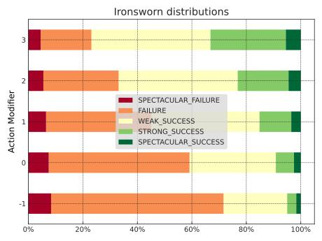

Modeling Ironsworn’s core mechanic
Shawn Tomlin’s Ironsworn melds a number of different influences in a fresh way. Its core mechanic involves rolling an action die (a d6), adding a modifier, and comparing the result to two challenge dice (d10s). If the modified value from the action die is strictly greater than both challenge dice, the result is a strong success. If it is strictly greater than only one challenge die, the result is a weak success. If it is equal to or less than both challenge dice, it’s a failure.
A verbose way to model this is to enumerate the product of the three dice and then perform logical comparisons.
expand can calculate the challenge-dice results for each action-die outcome.
We can also deploy our prior counting trick for dealing with the two d10s.
1 2 3 4 5 6 7 8 9 10 11 12 13 14 15 16 17 | |
-
Our counting trick.
1 2 3 4 5 6 7 8 9
>>> action_mods = list(range(-1, 4)) >>> for action_mod in action_mods: ... iron_distribution = expand(iron_dependent_term, d6 + action_mod) ... print(f"{action_mod:+} -> {iron_distribution.format_short(include_avg=False)}") -1 -> {FAILURE: 71.67%, WEAK_SUCCESS: 23.33%, STRONG_SUCCESS: 5.00%} +0 -> {FAILURE: 59.17%, WEAK_SUCCESS: 31.67%, STRONG_SUCCESS: 9.17%} +1 -> {FAILURE: 45.17%, WEAK_SUCCESS: 39.67%, STRONG_SUCCESS: 15.17%} +2 -> {FAILURE: 33.17%, WEAK_SUCCESS: 43.67%, STRONG_SUCCESS: 23.17%} +3 -> {FAILURE: 23.17%, WEAK_SUCCESS: 43.67%, STRONG_SUCCESS: 33.17%}
What’s with that 2 @ d10.lt(action.outcome)?
Let’s break it down.
H(10).lt(value) will tell us how often a single d10 is less than value.
1 2 | |
By taking advantage of the fact that, in Python, bools act like ints when it comes to arithmetic operators, we can count how often that happens with more than one interchangeable d10 by “summing” them.
1 2 3 4 5 | |
How do we interpret those results? 36 times out of a hundred, neither d10 will be strictly less than five. 48 times out of a hundred, exactly one of the d10s will be strictly less than five. 16 times out of a hundred, both d10s will be strictly less than five.
H’s @ operator provides a shorthand.
1 2 | |
Why doesn’t 2 @ H(6).gt(H(10) work?
H(6).gt(H(10)) will compute how often a six-sided die is strictly greater than a ten-sided die.
2 @ H(6).gt(H(10)) will show the frequencies that a first six-sided die is strictly greater than a first ten-sided die and a second six-sided die is strictly greater than a second ten-sided die.
This isn’t quite what we want, since the mechanic calls for rolling a single six-sided die and comparing that result to each of two ten-sided dice.
Now for a twist. A failure or success is particularly spectacular when the d10s come up doubles. The doubles rule uses both challenge-die outcomes. To model it, evaluate each combination of outcomes from the modified d6 and both d10s.
expand evaluates combinations from multiple source histograms or pools.
1 2 3 4 5 6 7 8 9 10 11 12 13 14 15 16 17 18 19 20 21 22 23 24 25 26 27 28 29 30 31 32 33 34 35 36 37 38 39 40 41 42 43 44 45 46 47 48 49 | |
The callback accepts mod as a keyword-only parameter, which lets us pass values to it through expand for visualization.
Table:
1 2 3 4 5 6 7 8 9 10 11 12 13 14 | |
| SPECTACULAR_FAILURE | FAILURE | WEAK_SUCCESS | STRONG_SUCCESS | SPECTACULAR_SUCCESS | |
|---|---|---|---|---|---|
| Action Modifier | |||||
| -1 | 8.33% | 63.33% | 23.33% | 3.33% | 1.67% |
| 0 | 7.50% | 51.67% | 31.67% | 6.67% | 2.50% |
| 1 | 6.50% | 38.67% | 39.67% | 11.67% | 3.50% |
| 2 | 5.50% | 27.67% | 43.67% | 18.67% | 4.50% |
| 3 | 4.50% | 18.67% | 43.67% | 27.67% | 5.50% |
Visualization:
1 2 3 4 5 6 | |

Interactive version: